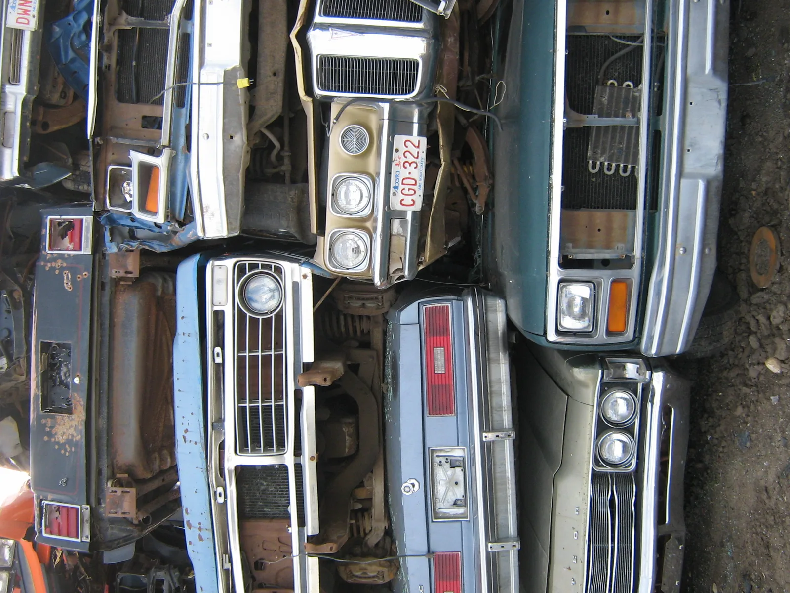

▲ 폐차장에 쌓인 차량들. 폐차는 절차 순서를 지켜야 지원금을 받을 수 있다 ⓒ Wikimedia Commons (Public Domain)
오래된 차를 처분하려는 소유주 상당수가 폐차와 조기폐차 지원금을 혼동한다. 그냥 폐차장에 넘기면 그만인 폐차와 달리, 지원금을 받으려면 정해진 순서와 조건을 지켜야 한다.
1. 누가 지원 대상인가

▲ 폐차 대기 중인 노후 차량들. 배출가스 등급이 지원 대상 판단의 첫 기준이다 ⓒ Wikimedia Commons
조기폐차 보조금의 기본 대상은 배출가스 4·5등급 경유자동차다. 여기에 더해 휘발유나 가스(하이브리드 포함) 연료를 쓰는 5등급 차량도 정부 방침에 따라 한시적으로 지원 대상에 포함되는 경우가 있으니, 신청 전 최신 공고를 확인하는 것이 중요하다. 저공해 조치(배출가스저감장치 부착 등)를 이미 받은 이력이 있다면 대상에서 제외될 수 있다.
2. 신청 방법 — 온라인과 오프라인 두 갈래
신청은 두 가지 경로로 가능하다. 온라인은 자동차배출가스 종합전산시스템(mecar.or.kr)에서 저공해조치 신청을 통해 진행하며, 오프라인은 구비서류를 갖춰 지자체나 한국자동차환경협회에 직접 노후차량 조기폐차 보조금 지급대상 확인 신청서를 제출하는 방식이다. 두 경로 모두 최종적으로는 협회의 확인 절차를 거치게 된다.
3. 놓치기 쉬운 조건들

▲ 자동차 폐차장 야적 전경. 조기폐차는 정상가동 상태 확인부터 시작된다 ⓒ CarPrism
필수 조건
- 한국자동차환경협회가 발급한 정상가동 판정이 있어야 한다.
- 정부 지원으로 배출가스저감장치를 부착하거나 저공해엔진으로 개조한 이력이 없어야 한다.
- 최종 소유자의 소유 기간이 보조금 신청일 전 6개월 이상이어야 한다.
이 중 소유 기간 조건은 특히 놓치기 쉽다. 중고로 구입한 지 얼마 안 된 차를 곧바로 조기폐차하려는 경우, 6개월 조건을 채우지 못해 지원 대상에서 제외될 수 있다. 폐차를 염두에 두고 있다면 이 조건부터 먼저 확인해야 한다.
4. 순서가 중요하다 — 폐차·말소 먼저, 청구는 그다음

▲ 자동차 검사·등록 관련 시설. 말소등록까지 마쳐야 보조금 청구가 가능해진다 ⓒ CarPrism
가장 흔한 오해는 지원금을 먼저 받고 폐차를 진행할 수 있다고 생각하는 것이다. 실제 절차는 반대다. 폐차 및 말소 등록이 완료된 후에야 보조금 청구 절차를 진행할 수 있으며, 청구 이후 약 1~2개월 내에 지자체에서 지급된다. 즉 차량을 먼저 폐차장에 넘기고 말소등록까지 마쳐야, 그다음 단계로 보조금을 청구할 수 있는 구조다.
5. 정리
체크포인트
- 지원 대상은 배출가스 4·5등급 차량이 기본이다.
- 신청은 mecar.or.kr 온라인 또는 지자체·협회 오프라인으로 가능하다.
- 소유 기간 6개월 이상 등 세부 조건을 미리 확인해야 한다.
- 절차는 폐차·말소등록 완료 → 보조금 청구 순서이며, 반대가 아니다.